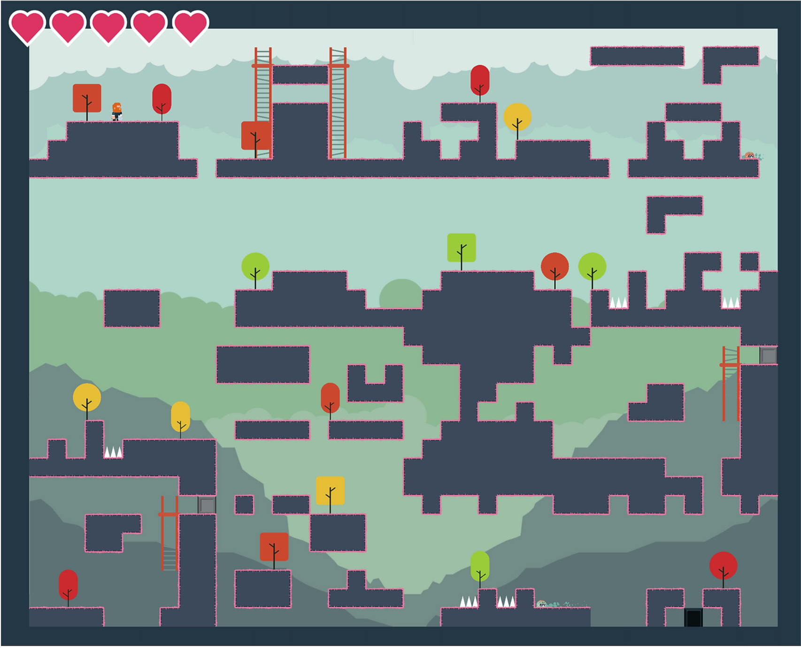
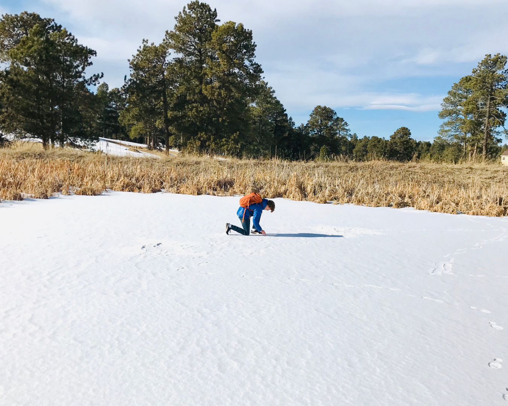
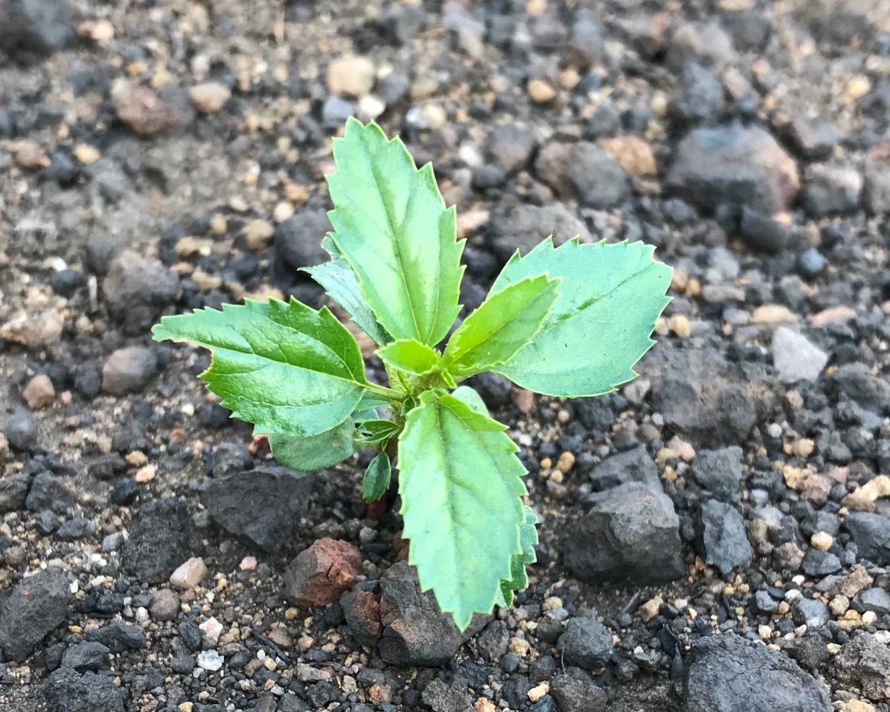
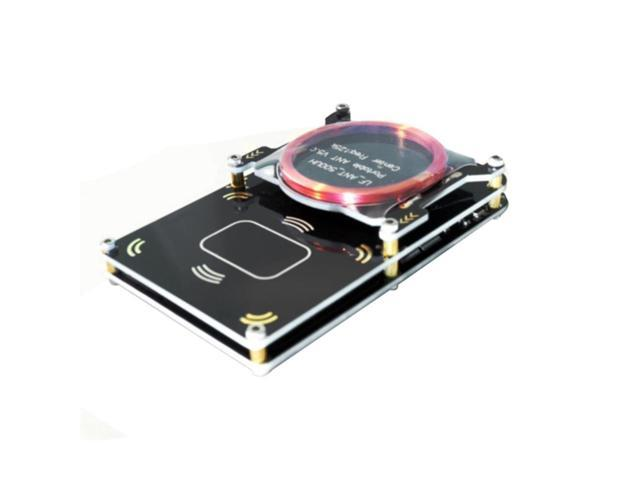

This was a fun little project I enjoyed working on. Trying to solve a problem I regularly face while making a game, creating levels. I wanted to create a method to be able to have a program to make the levels for me with utmost randomness but also still look good and function properly. Below I have my design process.
I created a paper device to test for arsenic that can be folded into varying shapes, creating 3D paper microfluidic channels. Liquids wick through the paper by capillary action, while carrying and mixing reagents. The origami microfluidic water test chip was able to analyze tap water for arsenic at 10 μg/L and accurately quantified 16 elements.

Coring is a backbone of climate research. The sediment at the bottom of a body of water is created by the slow accumulation of organic matter and sediment carried from water runoff. If sediment accumulates on top of itself, layer by layer, then each layer can act as a time capsule for capturing environmental conditions at the time. Though cores of large lakes and oceans are used to study large-scale climate trends, a small pond may be highly sensitive to changes in the local environment.

Following the Woolsey Fire (2018) we quadrat sampled three chaparral sites on the Pepperdine Campus in Malibu, CA. All three experienced fire and drought. One site had been subjected to five fires in less than 35 years. Another experienced long fire return. We quantified the post fire facultative seeding success of Malosma laurina and Ceanothus spinosus, and obligate seeding success of Ceanothus megacarpus. We compared findings to a 1986 study when chaparral was thriving with an abundant water supply.
With my experience with the Unity game engine, I wanted to learn and work with Vuforia's image recognition and augmented reality. I used a known image as a target and was able to interact with virtual objects with my hands. I also used these to display, scale, and move a 3d model, on these models.

Using the proxmark3 I used ID cards with RFID signals, to clone them and then transmit them to a blank card.